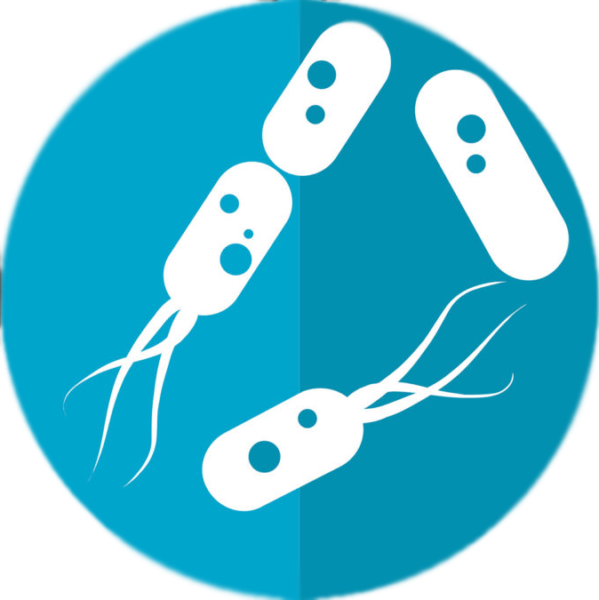
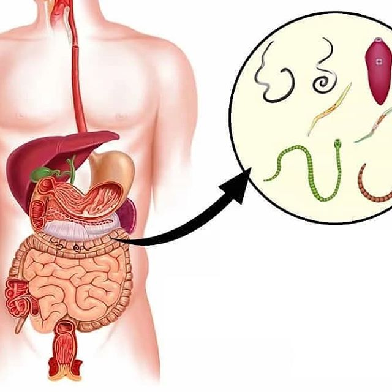
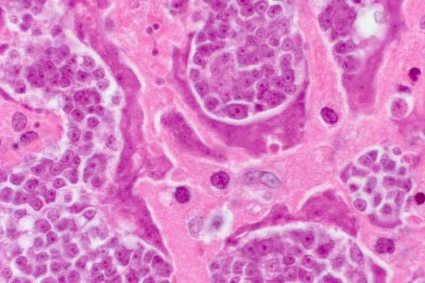

ЗДРАВОСЛОВЕН ЖИВОТ
МЕТОД ЗА ЛЕЧЕНИЕ НА ПАРАЗИТНИ ИНФЕКЦИИ. ПАРАЗИТОЛОГЪТ
РАЗБИРА КАК ДА СЕ СПАСИ ОТ ВРЕДНИ ГОСТИ В ТЯЛОТО
Според статистиката повече от 1 милиард души са заразени
с човешки папилома вирус (HPV). Може дори да не подозирате, че сте жертва на паразити.
На вашите въпроси ще отговори:
Антон Радомиров
Антон Радомиров
доц. д.ф.н., ръководител на Института за изследвания по медицинска паразитология
и тропическа медицина. Разработил е над 60 научни труда по молекулярна паразитология.
Редакция: Според статистиката повече от 1 милиард души
са заразени с човешки папилома вирус (HPV). Може дори да не подозирате, че сте жертва на паразити.
Изследователският институт по медицинска паразитология и тропическа медицина
откри нова причина, която също причинява папиломи в човешкото тяло: паразитна инфекция. Проучване, което беше
завършено наскоро, показва, че продуктите от отпадъците от паразити са токсични и образуват благоприятна среда
в стомаха за гниещ бактериален растеж. Поради тази причина хората, заразени с паразити, може да имат кожен
обрив и папиломи.
Днес ще говоря за това с ръководителя на
Изследователския институт по медицинска паразитология и тропическа медицина, г-н Антон Радомиров.
Г-н Антон Радомиров, здравейте! Ще започна веднага с
въпрос, който вълнува всеки един от нас. Вярно ли е, че България е лидер по заразяване на хората с паразити?
Да. Можем да кажем, че България е лидер в заразата с паразити. Причината за тази
тъжна реалност е изключително лошата екологична обстановка, бездействието на властите и небрежността на
хората.
Г-н Антон Радомиров, колко верни са данните от
изследванията за връзката между инфекцията с паразити и папиломните вируси?
Допреди няколко години медицинската общност смяташе, че папиломите се предават само
по полов път. Последните проучвания обаче доказват, че друга важна причина са стомашните и чернодробните
проблеми (които винаги са налице, когато хората са заразени с паразити). Учените също така отбелязват, че е
невъзможно да се пренебрегне такъв на пръв поглед „нормален“ симптом. Инфекцията с паразити може да доведе до
развитие на почти всички сериозни заболявания при хората.

Аз лично се доверявам на изследването на нашия институт. „Растежът на папиломи“
върху тялото прераства в сериозно заболяване. Около 92% от човешките смъртни случаи са причинени от инфекция с
паразити. И не говоря само за смъртните случаи от самата болест. По-голямата част от така наречените
„естествени смъртни случаи“ са последиците от паразити, живеещи в тялото и органите.
Обикновено под паразити се разбират червеи, които могат да доведат до
появата на папиломи и дори до смъртта на човек?
Всъщност е голяма грешка да се смята, че човешките паразити са само червеи. Има
голям брой различни паразити, които живеят в различни органи на човешкото тяло, което води до редица
последствия. Червеите, и по-точно хелминтите, са много опасни. Те буквално разрушават червата, като по този
начин водят до тяхното разпадане и в крайна сметка — до смърт. А хелминтите са доста трудни за откриване и
унищожаване.
Заедно с тях има хиляди други паразити, които могат да живеят в черния дроб, мозъка,
белите дробове, кръвта, стомаха. И почти всички те са смъртоносни. Някои от тях веднага започват да действат
агресивно и да разрушават тялото. Останалите могат временно да действат, без последствията да бъдат
забелязани, докато броят им не се увеличи толкова много, че организмът носител вече не може да издържи и
човекът умира.
В същото време мога да кажа с пълна увереност, че почти всички хора са заразени с
паразити. Просто повечето от тях са изключително трудни за откриване. И когато се появят последствията от
заразяване с паразити, едва тогава лекарите се опитват да ги лекуват. Дори когато паразитите се
разпространяват, са необходими специфични тестове за откриването им. Поне за повечето от тях.
Днес има хиляди паразити, които могат да живеят в черния дроб, мозъка, белите
дробове, кръвта, стомаха. И почти всички те са смъртоносни. Обикновено всичко започва с появата на папиломи.
Можете ли да дадете някои конкретни примери за
заразяване с паразити?
Всъщност мога да назова стотици случаи. Но ще се спра на тези, които по-ясно
показват опасността от паразитите.
Първо, както се оказа, някои тении, или както ги наричат още хелминти, също могат
да причинят рак. Освен това всъщност не човекът е заразен, а самите червеи. Трябва обаче да се има предвид, че
техните злокачествени клетки се разпространяват в цялото тяло, заразявайки хората. Това се случва, когато
ларвите на червеите навлязат в човешките лимфни възли от червата. В резултат на това те се превръщат в ракови
тумори, които бързо заразяват хората. Смъртта настъпва буквално в рамките на няколко месеца. Миналата седмица
беше регистриран още един случай на човешка смърт от такива тумори.

В центъра на тази снимка можете да видите: клетките на
злокачествен тумор, които се предават на човек от паразитен червей
Друг доста често срещан случай е заразяването с човешки мозъчни паразити. Това води
до неврози, умора, прекомерна възбудимост и резки промени в настроението. А на по-късен етап, след като
мозъкът се напълни с паразити, се развиват още по-сериозни заболявания, които в крайна сметка водят до смърт.
Третият пример е заразяването с паразити на човешкото сърце. Смята се, че това не е
много често срещано заболяване, но всъщност около 23% от хората ги носят в сърцето си. Това се случва на
практика на всеки четвърти човек. На по-ранен етап те са напълно невидими, действието им върху тялото е
сведено до нула. Но колкото повече време минава, толкова по-видима е дейността на червеите в човешкото сърце.
Те стават основната причина за много сърдечни заболявания и ако говорим за внезапна смърт поради сърдечен
удар, тези паразити представляват почти 100% от тези случаи.
По какви други причини паразитните инфекции се смятат за опасни?
При мъжете паразитите могат да причинят: HPV, простатит, импотентност, аденом,
цистит, пясък, камъни в бъбреците и пикочния мехур.
При жените могат да причинят болка и възпаление на яйчниците. Развиват се фиброми,
миоми, фиброкистозна мастопатия, възпаление на надбъбречните жлези, пикочния мехур и бъбреците. И разбира се,
настъпва преждевременно стареене на кожата, появяват се бръчки, торбички под очите, брадавици и папиломи по
лицето и тялото.
Възниква въпросът как да се предпазим от паразитите.
Има ли тестове, лекарства?
За съжаление, трябва да се каже, че днес няма наистина точни средства за
диагностициране на паразити вътре в човека. Отчасти това се дължи на наличието на голям брой паразитни видове
в нашия организъм (повече от 2000 вида, за които знаем) и изключително високото ниво на сложност на тяхното
откриване. Процедурата за пълен анализ на паразити в България се предлага само на няколко места и всъщност е
доста скъпа.
Първите симптоми, по които може да се разбере, че в
тялото ни живеят паразити са:
- основни симптоми на папиломи в тялото;
- наличие на неприятна миризма в устата;
- алергии (зачервяване, сълзене на очите, хрема);
- обриви по кожата;
- чести настинки, възпаление на сливиците, назална конгестия;
- хронична умора (уморявате се бързо, независимо какво правите);
- често главоболие;
- запек или диария;
- ставни и мускулни болки;
- раздразнителност, нарушение на графика на съня и апетита;
- тъмни кръгове, торбички под очите.
Ако почувствате поне един от гореизброените симптоми, с вероятност от 99%, може да
се каже, че имате паразити в тялото си. И трябва спешно да се борите с тях!
Ако ще говорим за лекарства в борбата с тях, тогава всичко е проблем. Засега има
само една разработка, която ви позволява да премахнете паразитите от тялото си веднъж завинаги.Този продукт,
между другото, е разработен в България.
Това е противопаразитният продукт, наречен , който се разпространява в 22
страни по света за всички, които имат нужда от него, но за това ще говорим по-късно. е създаден с
участието на нашия Институт по паразитология, Българската академията на науките и група млади, независими
учени. Едновременно се заехме с изследването на десетки антипаразитни средства. Но в процеса на
разработване беше установено, че е най-ефективното средство.
Днес това е единственият функционален начин за прочистване на тялото от паразити,
който съществува в света. Това е и причината международни аптечни вериги и фармацевтични компании също да го
използват. В сравнение с други антипаразитни средства, този препарат действа незабавно срещу целия спектър от
паразити, с които хората могат да бъдат заразени. Предвид проблемите за тяхната диагностика, това ви позволява
да почистите целия организъм по възможно най-ефективния начин. Всъщност споменах по-горе, че е практически
невъзможно да се разбере какъв вид паразити могат да заразят тялото на човек. Междувременно унищожава
и елиминира от организма паразити, които могат да живеят навсякъде — от мозъка и сърцето до черния дроб и
червата. Нито едно от съществуващите средства не е в състояние да осъществи такъв процес.
Клинични изследвания на
Клиничните изследвания на са проведени в края на 2017 г. от Изследователския
институт към Първа МБАЛ в София. В тях участват общо 3289 души.
- 100% от участниците: Премахване на хелминтите и яйцата
- 91% от участниците: Нормализиране на функциите и състоянието на панкреаса
- 83% от участниците: Премахване на алергичен дерматит
- 92% от участниците: Премахване на гастрит, язва, диария
- 100% от участниците: Премахване на папилома вирус и израстъци
Мисля, че нашите читатели ще искат да чуят къде могат
да закупят ?
Абсолютно всеки жител на България може да се възползва от
Абсолютно всеки жител на България може да се възползва от
За да докаже високата ефективност на , както и да запознае населението на
страната с въпросния продукт, Асоциацията на дерматолозите на България, която включва най-известните лекари,
разпространява въпросния продукт сред населението само за 75 Лев.
Можете лично да проверите ефективността на това средство!
ВСЕКИ БЪЛГАРСКИ ГРАЖДАНИН МОЖЕ ДА ПОРЪЧА СЕГА!
Г-н Антон Радомиров, какво трябва да се направи по
въпроса?
Г-н Антон Радомиров:
- Попълнете необходимия формуляр на специално създадения уебсайт или попълнете формуляра по-долу.
- Изчакайте обаждането на оператора и посочете на кой адрес да бъде доставен продуктът.
Коментари:
Филипа Ангелова
И аз пробвах . Имах много папиломи по врата и подмишниците. Още на петия
ден забелязах значително намаляване на броя им. Започнах да се чувствам по-добре и загубих тежестта, която
усещах в стомаха си.
Деница Коларова
ми беше доставен веднага на следващия ден. Преди да започна да го
приемам, имах много папиломи на врата. След като започнах да го използвам, от мен излезе НЕЩО, от което
още съм шокирана. Не можех да дори си помисля, че толкова много шлака се е натрупала в тялото ми. Толкова
беше ужасно, че няколко дни не можех да гледам храна.
Елвира Иванова
Хора, дори не можете да си представите какво ми се случи. Отидох до тоалетната и
там забелязах, че от тялото ми излиза нещо, което не мога да опиша, дори и днес съм в шок. Една моя
приятелка ми предложи да използвам - самата тя наскоро се сблъска със същия проблем. След
лечението реших да се прегледам и отидох на лекар — той ми обясни, че всичко е наред с мен и вече няма
причина за притеснение.
Бисер Христов
Благодаря ви много! Когато започнах да използвам , дори не можех да си
представя, че един ден ще постигна такъв резултат. Сега болката в корема изчезна (сигурно трябва да е
имало нещо там), задухът, повръщането и папиломите също изчезнаха. И сега, на 53 години, се чувствам
по-добре от всеки 30-годишен. Благодаря ви, че разказахте на хората за този жизненоважен проблем. Сигурен
съм, че те никога няма да чуят толкова ценна информация от своя лекар.
Росен Краснички
съм пробвал лично. Мога да кажа, че ефектът е просто невероятен.
Чувствам се млад и здрав. Завърших курса на лечение преди 8 месеца, чувствам се добре, не боледувам
толкова често, колкото преди, сега съм по-активен и жив. Някога дори не можех да мечтая за такива
резултати.
Александър Камбуров
Наскоро гледах някакъв документален филм по телевизията за токсични вещества и
там говореха точно за този продукт. Те също така показаха, че днес това е най-добрият продукт срещу
токсини и отпадъци и няма други подобни на него. Определено нямаше как да лъжат там, така че поръчах курс
за себе си.
Галина Халилова
Аз също съм поръчала въпросния продукт. Нямам търпение да ми го доставят!
Вили Тодоров
Имах постоянни главоболия и папиломи. Започнах да използвам две поредни
седмици и проблемите изчезнаха. И сега постоянно ме измъчва въпросът — какво се е било натрупало в мен
през цялото това време?
Владимира
Баба ми ме научи как да се отървавам от токсините с помощта на ориз. Цялото ми
семейство го използва и знаете ли какво, наистина работи, но не толкова ефективно... Не помага при
папиломи. И така, реших да поръчам и . Вече нямам проблеми с папиломите! Всъщност всички спряхме да
използваме оризов сок, а започнахме да използваме . Ефектът определено е много по-добър, цената е
достъпна и няма нужда да губите време за приготвяне на отвара, което е много удобно.
Дани Достинов
Това беше много интересно интервю, благодаря ви много! Вие отваряте очите на
хората!
Самуил
Ами ако всичко е измама? Защо се продава само онлайн?
Асен Костурски
Съгласен съм с всички коментари, направени тук. Когато започнах да го използвам,
от мен излезе нещо, което ме уплаши изключително много, затова реших да отида на лекар. Той видя всичко
това и каза, че са натрупвания от токсини от червата. И ако не беше , можеше да ме убият до 2-3
години.
Юлиана Гашидова
Самуил, кажи ми, моля те, прочете ли статията или не? За каква измама говориш,
като плащането става при получаване на продукта? Аз лично поръчах въпросния продукт и куриерът ми го
донесе вкъщи. Проверих всичко и едва след това платих. В днешно време в интернет се продава всичко — от
дрехи до обувки, от уреди до различни аксесоари, всъщност е много удобно.